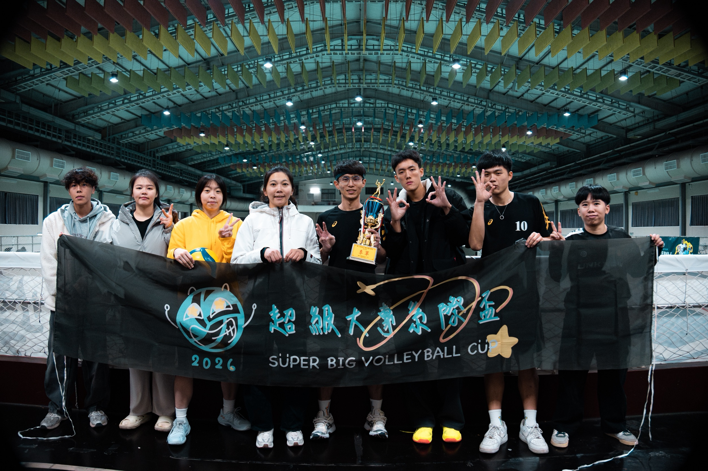
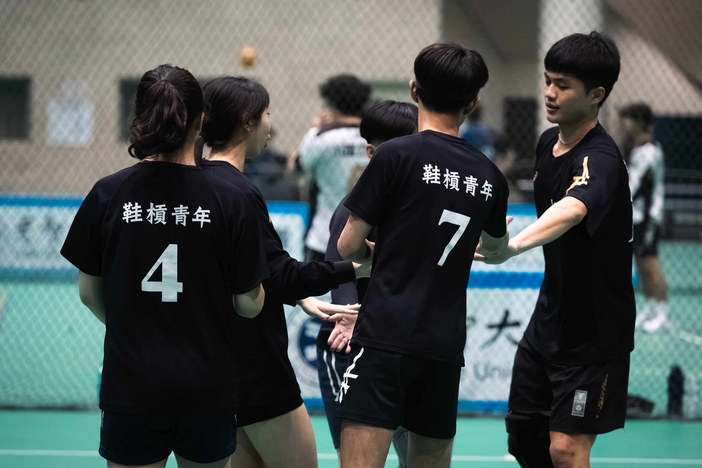

鞋槓青年
關於球隊
楊克武
2026 超級大專系際盃 in 元智大學
- 日期：02/07 - 02/08
- 賽果：混排組 - 季軍 🥉
- 參賽人員：姜秉勳、許博凱、蔡行揚、游佳臻、張庭雯、王冠茵、辜瀞儀、謝昀倢


2025 花蓮奇萊盃 in 花蓮高工
- 日期：10/04 - 10/05
- 賽果：公開男子組 - 八強
- 參賽人員：姜秉勳、謝昱陞、邱明鋒、曾聖倫、楊克武、吳柄承、曾瑋群

2025 南天宮金媽祖盃 in 羅東國中
- 日期：09/21
- 賽果：社會男子組 - 亞軍 🥈
- 參賽人員：姜秉勳、曾聖倫、湯皓翔、李淯紘、李浩然、鄭宇恩、周子宸、陳子帆、潘星辰、蔡行揚、楊克武、藍翊愷

2025 羅東主委盃 in 宜蘭大學
- 日期：09/21
- 賽果：社會男子組 - 殿軍
- 參賽人員：姜秉勳、魏冠杰、蔡宗岳、詹詠鈞、朱凱逸、湯皓翔、張顥耀、范廷育、陳泰鋐